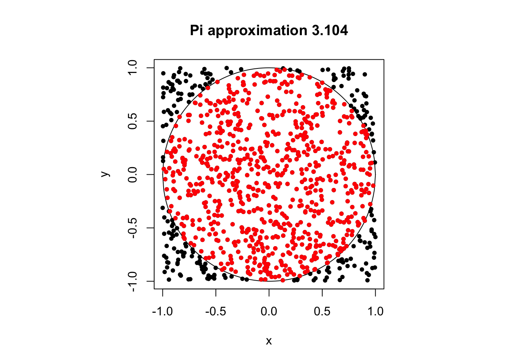
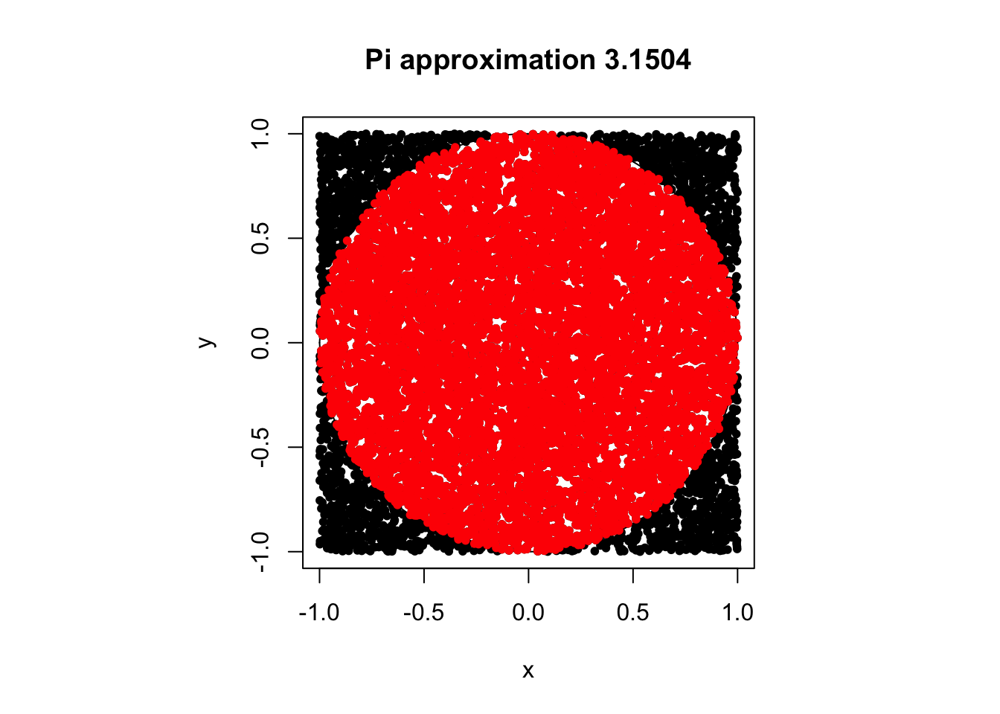
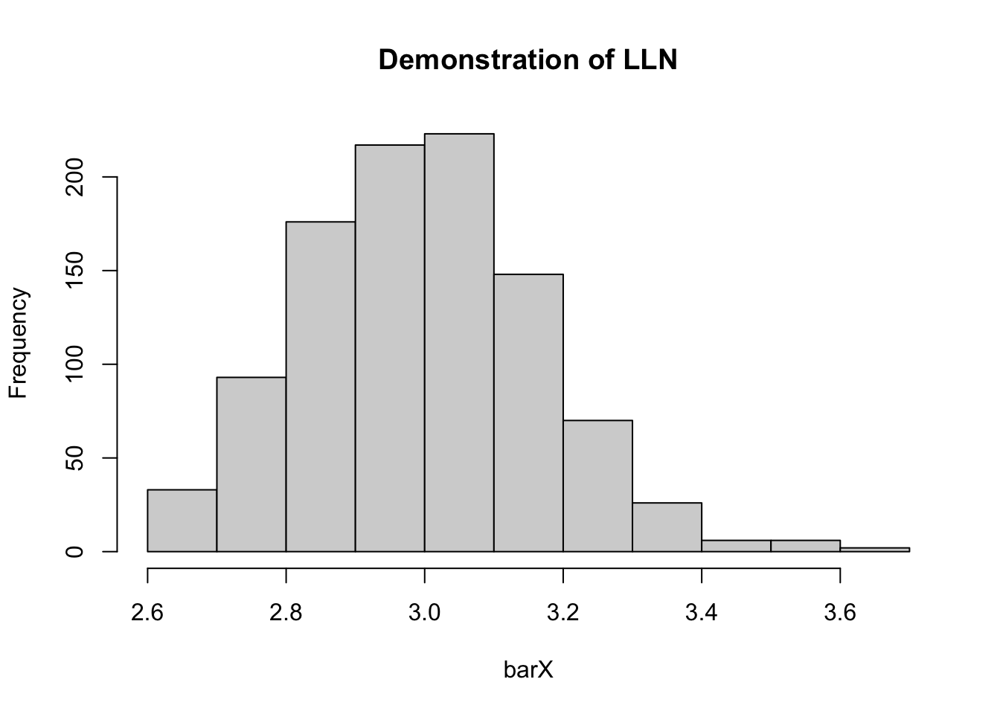
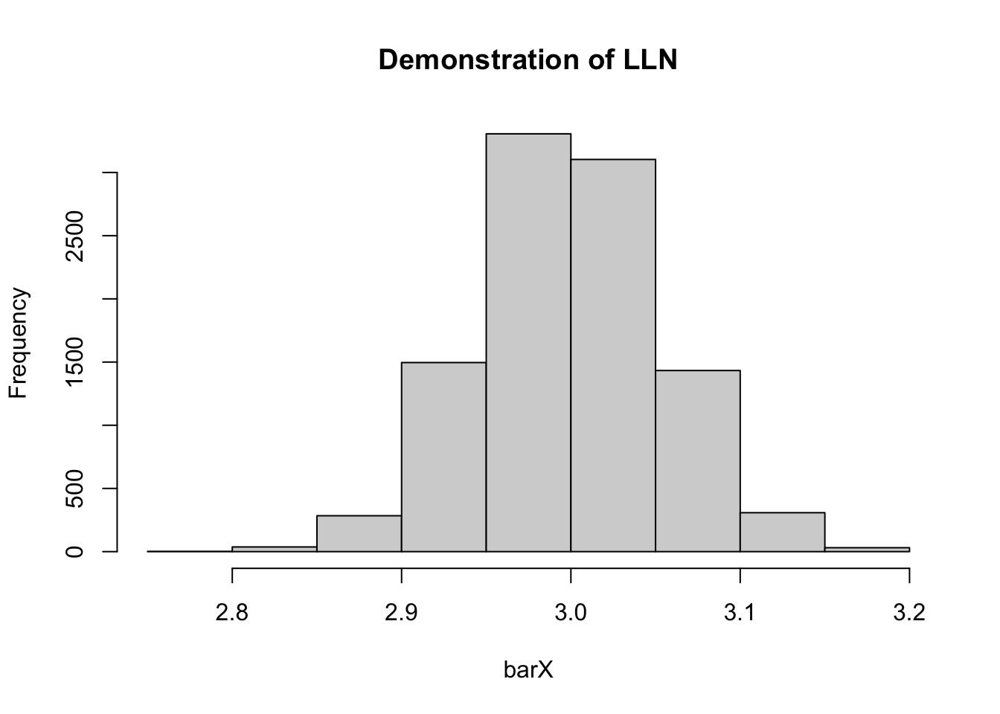
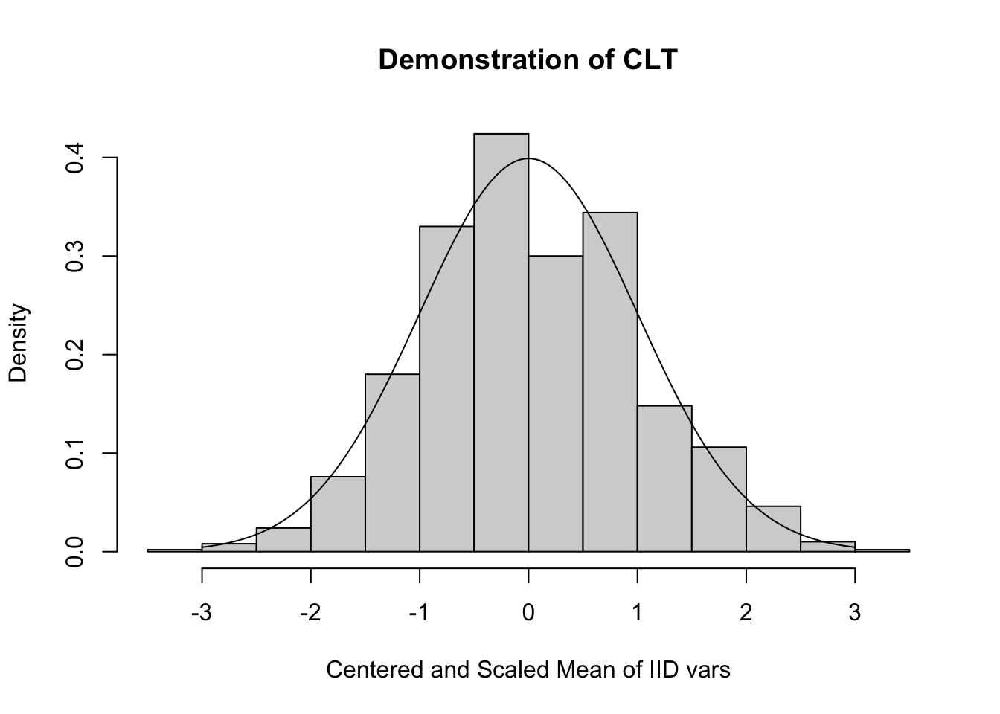
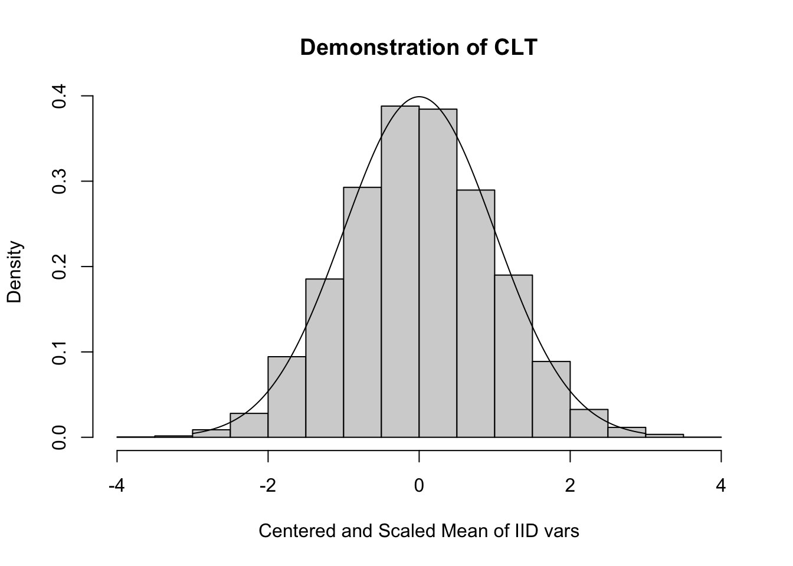
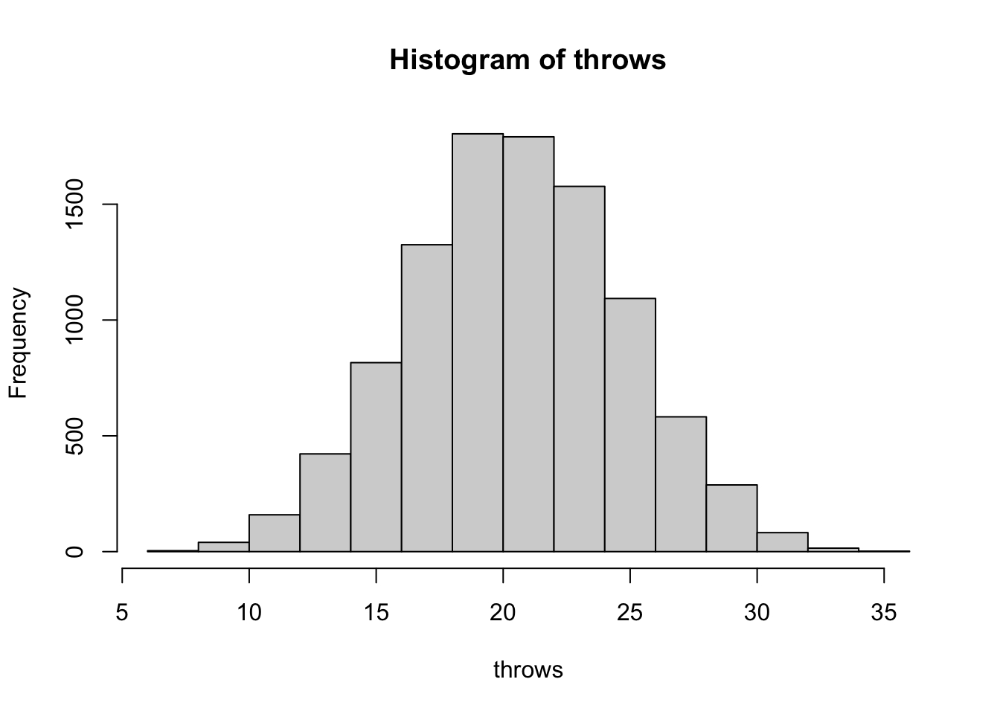
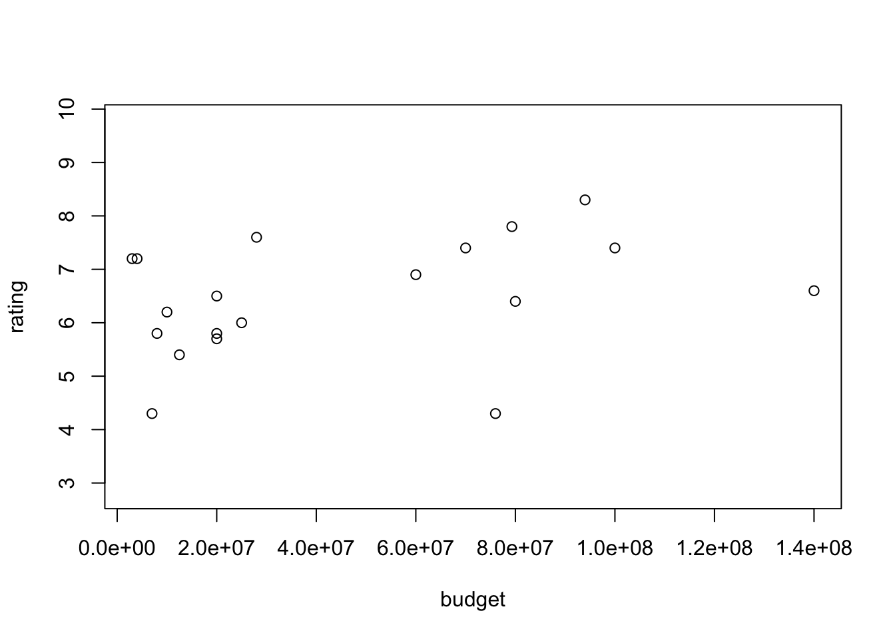
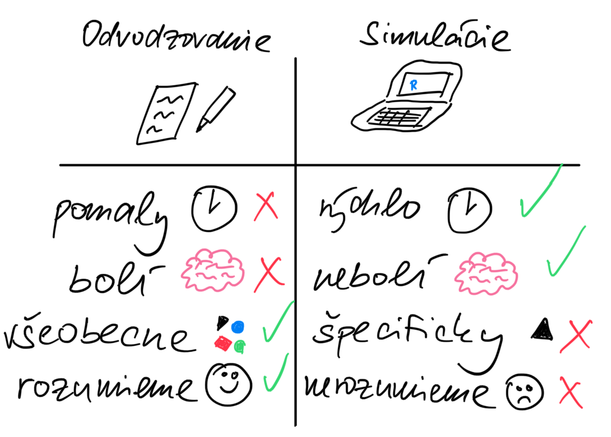

3 Náhodné čísla a simulácie
Obrovskou výhodou počítačov je schopnosť simulovať náhodnosť.
Veľa otázok je mimoriadne zložitých, častokrát kvôli tomu, že sa týkajú nejakého javu, ktorý je náhodný. Nevieme, aké bude zajtra počasie alebo ako dopadnú voľby. Náhodnosť je zväčša súčasťou daného procesu a nevieme sa jej zbaviť. Chceme ju spoznať, porozumieť jej. Na toto je vhodný mechanický nástroj. Pomocou počítača si veci vieme vyskúšať, môžeme simulovať rôzne scenáre toho, ako veci môžu dopadnúť. A výpočtová sila je stále a stále lacnejšia, transistory v procesoroch sa zmenšujú a dnešná moderná smart chladnička má väčšiu výpočtovú silu ako superpočítač v minulosti.
V minulosti sme sa naučili ako kvantifikovať náhodnosť. Pomocou rôznych nástrojov niekedy vieme vypočítať pravdepodobnosť nejakej udalosti alebo charakteristiky nejakej náhodnej premennej. Príklady s ktorými sme sa doteraz stretali sú relatívne umelé. Na to aby sme vedeli vypočítať pravdepodobnosť udalosti pomocou ceruzky a papiera, potrebujeme aby bol daný problém dostatočne jednoduchý. A preto sme:
- hádzali férovou mincou.
- hádzali neférovou mincou.
- vyberali srdcové eso z dokonale zamiešaného balíčka kariet.
- vyberali guľôčky z vreca plného modrých a červených guľôčok.
Tieto príklady sú ilustratívne a pomôžu nám uchopiť štruktúru niektorých jednoduchých typov náhodnosti. Akonáhle však ideme riešiť praktické problémy, veci sa veľmi rýchlo počítajú ťažšie.
Príklad 3.1 Letecké spoločnosti typicky robia overbooking. Predajú viacej lístkov ako majú miest na sedenie, lebo sa mnohokrát stane, že niekto zmešká let/nepríde. Ak prídu všetci, niektorých musia posadiť na ďalší let a zaplatiť im nejaké kompenzácie. Ak predajú málo leteniek, tak nosia v lietadle vzduch a ten neplatí za letenky. Balancovať tieto dve protichodné sily je neľahké. Predstavte si Boeing 737-700, ktorý má 149 miest na sedenie pre pasažierov. Nech je počet záujemcov o let Poissonovsky rozdelená náhodná premenná so strednou hodnotou 150. Nech je pravdepodnosť, že pasažier, ktorý si kúpi lístok príde na letisko náhodná premenná, ktorá je rovnomerne rozdelená na intervale \([0.95,1].\) Nech cena letenky 200eur ale pre 150.teho zákazníka stúpa od 300euro po 5 eurách (t.j. potenciálny 180.zákazník zaplatí \(300+30.5 = 450\) eur). S overbookingom je spojené riziko, že zákazníkovi, ktorý sa nedostane do lietadla musí letecká spoločnosť vyplatiť kompenzáciu vo výške 1000eur. Každý 50.ty sklamaný zákazník podá žalobu na leteckú spoločnosť z čoho jej vznikne ujma 500eur pre každú žalobu a ak spoločnosť súd prehrá ďalších 10000eur. Zo skúseností vieme, že šanca úspešnej žaloby je \(30\%\) s pravdepodobnosťou \(90\%\) a normálne rozdelená náhodná premenná so strednou hodnotou \(80\%\) a smerodajnou odchýlkou \(2\%\) s pravdepodobnosťou \(10\%.\)
Ako má robiť táto letecká spoločnosť overbooking? Konkrétne:
- Aká je optimálna stratégia leteckej spoločnosti, ak chce maximalizovať priemerný zisk?
- Aká je optimálna stratégia leteckej spoločnosti, ak chce minimalizovať riziko pri fixnom priemernom zisku 42000 eur za jeden let?
Odpoveď asi nebude priamočiara. Šikovnejší sa k odpovedi dopočítajú v konečnom čase ale my ostatní si zvolíme praktickejšiu cestu. Odpoveď získame pomocou simulácie! Vygenerujeme si veľa veľa náhodných scenárov pre rôzne úrovne overbookingu a pozrieme sa, čo je najlepšie pre leteckú spoločnosť najlepšie. Detaily neskôr. Poučenie nateraz je takéto: pravdepodobnosť nie sú len karty, guličky a kocky. Sú to aj peniaze.
3.1 (Pseudo)Náhodné čísla v počítači
Na to aby sme vedeli generovať náhodné čísla, potrebujeme nejaký zdroj náhodnosti. Ten môže prísť z nejakého externého zdroja.1 Na počítači sa preto uspokojujeme so pseudonáhodnými číslami. Existujú deterministické procesy, ktoré generujú čísla, ktoré sú z praktického hľadiska náhodné. Tieto procesy sú rôzne a sú “rôzne kvalitné” generátory pseudonáhodných čísel. My budeme používať tú predvolenú metódu v Rku.
Príkazom set.seed() zafixujeme generátor náhodných čísel a zabezpečíme tým reprodukovateľnosť našich výsledkov.
Keď si teraz niekto nechá vygenerovať 10 náhodných čísel z intervalu \([0,1],\) ktoré sú rovnomerne rozdelené, tak dostane úplne tie isté čísla.
## [1] 0.1707599 0.1818867 0.7865318 0.5782902 0.9364266 0.9324842 0.1914957
## [8] 0.2923337 0.4330475 0.8927892Akonáhle si vygenerujeme novú desaticu čísel, tieto budú prirodzene iné.
## [1] 0.5294097 0.9021275 0.9895494 0.5304749 0.1230083 0.3572835 0.2611675
## [8] 0.3291930 0.3557725 0.7183207Ale ak znovu zafixujeme seed náhodného generátora čísel, znova dostaneme tie isté čísla ako predtým.
## [1] 0.1707599 0.1818867 0.7865318 0.5782902 0.9364266 0.9324842 0.1914957
## [8] 0.2923337 0.4330475 0.8927892Na čo je toto užitočné? Umožní nám to jednoducho vytvárať reprodukovateľný kód, kde budeme generovať nejaké náhodné čísla. Každý kto si neskôr spustí našu simuláciu dostane tie isté výsledky. Potrebuje však zadať to isté číslo 28394.
3.2 Ako to funguje
Z teórie vieme, že sa (za určitých podmienok) aritmetický priemer vypočítaný z iid vzorky blíži ku skutočnému populačnému priemeru.2
Uvažujme udalosť \(A.\) Jej pravdepodobnosť označme \(P(A).\) Označme naviac funkciu \(I(A),\) ktorá nadobúda hodnotu 1 ak udalosť \(A\) nastala a hodnotu \(0\) ak nenastala.
\[ I(A)= \begin{cases} 1,& \text{ak udalosť A nastala,} \\ 0, & \text{ak udalosť A nenastala.} \end{cases} \]
Vieme, že \(E[I(A)] = 1\cdot P(A) + 0\cdot P(A^C) = P(A).\) Preto použitím ZVČ vieme, že ak máme \(I_1, I_2,\cdots,I_n\) nezávislé realizácie \(I(A),\) potom
\[\frac{I_1 + \cdots + I_n}{n} \rightarrow_P P(A),\] kde symbol \(\rightarrow_P\) označuje konvergenciu podľa pravdepodobnosti. Takže v skutočnosti len využívame frekventistickú interpretáciu pravdepodobnosti: \[P(A) = \frac{\text{počet úspešných pokusov (teda udalosť $A$ nastane)}}{\text{počet všetkých možných pokusov}}.\]
Príklad 3.2 Odhad čísla \(\pi\) pomocou simulácie. Vieme, že obsah kruhu je \(\pi r^2.\) Môžeme rovnomerne náhodne generovať čísla na intervale \([0,1]\) na oboch osiach a pozrieť sa, aká proporcia z nich spadne do kruhu.
piApprox <- function(n){
x <- runif(n,-1,1)
y <- runif(n,-1,1)
z <- (x^2 + y^2 < 1)
par(pty="s")
plot(x,y,pch=20,main=paste("Pi approximation",as.character(4*mean(z))))
lines(seq(-1,1,by=0.01),sqrt(1-seq(-1,1,by=0.01)^2))
lines(seq(-1,1,by=0.01),-sqrt(1-seq(-1,1,by=0.01)^2))
points(x[z],y[z],col="red",pch=20)
}
piApprox(1000)

Príklad 3.3 Zákon o veľkých číslach Aritmetický priemer z pozorovaní s rovnakou strednou hodnotou sa za určitých podmienok blíži ku skutočnému priemeru.
#law of large numbers
simLLN <- function(nSim,nSample){
barX <- numeric(nSample)
for (iSim in 1:nSim){
X <- rpois(nSample,3)
barX[iSim] <- mean(X)
}
hist(barX,main="Demonstration of LLN")
}
simLLN(1000,100)

Príklad 3.4 Centrálna limitná veta Aritmetický priemer z iid pozorovaní sa za určitých podmienok blíži k normálnemu rozdeleniu.
simCLT <- function(nSim,nSample){
barX <- numeric(nSample)
for (iSim in 1:nSim){
X <- rpois(nSample,3)
barX[iSim] <- mean(X)
}
trueMean <- 3
trueSD <- sqrt(3)
hist( sqrt(nSample)*(barX-trueMean)/trueSD,
xlab="Centered and Scaled Mean of IID vars", prob=TRUE,
main="Demonstration of CLT")
lines( seq(-3,3,by=0.01),dnorm(seq(-3,3,by=0.01)) )
}
simCLT(1000,100)

3.3 Rôzne typy náhodných premenných
Rko má jednotnú syntax na prácu s rôznymi typmi náhodných premenných.
rpois- nám vygeneruje \(n\) iid čísel z Poissonoveho rozdelenia s parametromlambdadpois- pravdepodobnostná funkcia (v prípade spojitej náhodnej premennej by to bola funkcia hustoty pravdepodobnosti)ppois- kumulatívna distribučná funkciaqpois- kvantil pravdepodobnostného rozdelenia (inverzná kumulatívna distribučná funkcia)
Pre iné náhodné premenné je syntax podobná:
runif,dunif,punif,qunif- Rovnomerné rozdelenie (diskrétne, spojité)rbinom,dbinom,pbinom,qbinomBinomické rozdelenie (a jeho špeciálny príklad Bernoulliho rozdelenie)rgeom,dgeom,pgeom,qgeom-Geometrické rozdelenierhyper,dhyper,phyper,qhyper-Hypergeometrické rozdeleniernbinom,dnbinom,pnbinom,qnbinom-Negatívne binomické rozdeleniernorm,dnorm,pnorm,qnorm-Normálne rozdelenierexp,dexp,pexp,qexp-Exponenciálne rozdelenierchisq,dchisq,pchisq,qchisq-Chí-kvadrát rozdeleniert,dt,pt,qt-Studentovo rozdelenie (t-rozdelenie)
3.4 Rovnomerné rozdelenie ako základ
Akonáhle máme generátor pseudonáhodných čísel, ktorý vie generovať rovnomerne náhodne na intervale \([0,1]\), pomocou neho vieme generovať akékoľvek iné pravdepodobnostné rozdelenie.
Príklad 3.5 Skúsme simulovať hádzanie kockou ale len s pomocou funkcie runif(). Ak padne číslo väčšie ako 0.5, prehlásime to za hlavu.
## [1] 1 0 0 1 0 0 1 1 1 0Majme spojitú náhodnú premennú \(X\), ktorá má kumulatívnu distribučnú funkciu \(F_X.\) Označme symbolom \(U\) rovnomerne rozdelenú náhodnú premennú \(U \sim Unif[0,1].\) Potom pre \(Y = F_X^{-1}(U)\) platí \(Y \sim F_X.\)
Toto má obrovské praktické dôsledky. Akonáhle máme generátor pre \(U\), vieme si vygenerovať akúkoľvek spojitú náhodnú premennú. Stačí len pretransformovať \(U.\)
Potom máme \[P(Y \leq y) = P(F_X^{-1}(U) \leq y) = P(U \leq F_X(y)) = F_U(F_X(y))=F_X(y)\] kde posledná rovnosť plynie zo skutočnosti, že \(U \sim Unif[0,1]\) a \(F_X(y) \in [0,1].\) 3
3.5 Náhodný výber
Ak z nejakej množiny chceme náhodne vyberať objekty, použijeme funkciu sample(). Bez akýchkoľvek iných argumentov dostávame náhodnú permutáciu (cudzie slovo pre “poprehadzovanie”).
#sampling
namesVec <- c("Julia","Martin","Peter","Stefan","Robert","Maria","Zuzana")
#random permutation
sample(namesVec)## [1] "Peter" "Maria" "Robert" "Stefan" "Martin" "Zuzana" "Julia"Druhý argument hovorí o tom, koľko objektov máme vybrať, defaultne je to dĺžka vstupného vektora.
## [1] "Zuzana" "Stefan" "Robert"Tretí argument je, či je daný objekt môžeme po vybratí dať naspäť (replace=TRUE znamená, že áno, dáme naspäť).
## [1] "Stefan" "Maria" "Maria"Počet vybratých objektov môže byť väčší ako dĺžka vstupného vektora len ak je nastavené replace=TRUE
## [1] "Martin" "Peter" "Robert" "Zuzana" "Robert" "Martin" "Peter" "Martin"
## [9] "Julia" "Martin"Skúsme hodiť férovou mincou 100krát.
## [1] 1 1 1 1 0 0 0 0 1 1 1 0 1 0 0 1 1 1 0 0 1 0 1 1 0 1 1 0 1 1 1 0 0 0 0 0 1
## [38] 1 1 1 0 0 0 1 0 0 0 1 1 1 0 0 0 0 0 1 0 1 0 0 1 0 0 0 1 1 1 1 1 0 1 0 0 0
## [75] 0 1 0 0 1 0 0 0 0 1 0 1 1 1 0 1 1 1 1 0 0 0 1 0 1 1Alebo 20krát hodiť férovou kockou.
## [1] 1 3 1 3 2 6 3 6 2 6 6 6 5 2 1 4 4 2 6 6Príklad 3.6 Hodili sme férovou kockou 6 krát a súčet je 30. Je to veľa?
A vôbec, čo to vlastné znamená “veľa”?
#We throw the dice 6 times and got 30 in sum together. Is it a lot?
#Simulate
sim3dices <- function(nSim){
th <- numeric(nSim)
for (iSim in 1:nSim){
th[iSim] <- sum(sample(1:6,6,replace=TRUE))
}
return(th)
}
throws <- sim3dices(10000)
#plot
hist(throws)
## [1] 0.0212Môžeme si simulovať hádzanie mnoho krát a skrátka sa pozrieť koľkokrát nastane ešte extrémnejšia udalosť. Na to, aby toto číslo bolo presné potrebujeme veľa simulácií.
Príklad 3.7 Vyberte 100 náhodných animovaných filmov dlhších ako 60 minút a zobrazte vzťah medzi hodnotením a rozpočtom.
#plot the relationship between budget and rating for 100 randomly selected
# animation films that are longer than 60mins
library(ggplot2movies)
library(dplyr)
dd <- movies %>% filter(Animation==1,
length>60)
nRows <- dim(dd)[1]
idRows <- sample(1:nRows,100)
dd100 <- dd[idRows,]
with(dd100,plot(budget,rating))
3.6 Zhrnutie
Riešenie problémov pomocou simulácií je jednoduché a poľahky sa implementuje. Na druhej strane sú simulácie vždy špecifické pre dané konkrétne nastavenie tej ktorej simulácie. Je to použitie hrubej sily. Vidíme, ako to je ale nie prečo.

Obrázok 3.1: CBA pre simulačný prístup
3.7 Cvičenia
Cvičenie 3.1 Naprogramujte hod férovou kockou len s použitím funkcie runif(). Potom s ňou hoďte 100 krát a nakreslite histogram. Zabezpečte, aby váš kód bol reprodukovateľný.
Cvičenie 3.2 Použitím predošlej funkcie popíšte pravdepodobnostné správanie súčtu počtu bodíkov na troch nezávislých kockách. Zabezpečte, aby bol váš popis dostatočne presný.
Cvičenie 3.3 Podrobne vysvetlite, prečo nie je dobrým nápadom fixovať seed náhodného generátora vo vnútri funkcie.
Cvičenie 3.4 Majme balíček kariet hodnosti v poradí 2,3,4,5,6,7,8,9,10,J,Q,K,A a 4 rôzne farby. Vyberte z balíčka 5 kariet. Aká je šanca, že dostaneme postupku?
Cvičenie 3.5 Vyberte 200 náhodných akčných filmov starších ako 20 rokov a zobrazte vzťah medzi hodnotením a dĺžkou filmu. Vyberte rôzne vzorky a pozerajte sa, ako veľmi sa tento vzťah mení.
Cvičenie 3.6 Palicu rovnomerne náhodne zlomíme na dvoch miestach. Aká je šanca, že budeme vedieť z týchto troch kúskov urobiť trojuholník?
Cvičenie 3.7 Skúsení kartári poznajú hru Vojna. Porozmýšľajte, ako by ste overili akú veľkú výhodu Vám dáva skutočnosť, že máte v balíčku všetky 4 esá. Aké všetky komplikácie musíte riešiť. Navrhnite principiálny postup (nič neprogramujte), ako by ste to overili ak by ste mali neobmedzene veľa výpočtovej sily.
Cvičenie 3.8 Adam a Božena idú do streleckého súboja, Adam strieľa ako prvý a trafí s pravdepdodobnosťou 30%. Božena po ňom (ak sa netrafí) a triafa s pravdepobnosťou 35%. Kto má väčšiu šancu, že vyhrá? Aká by musela byť Boženina presnosť, aby bol súboj spravodlivý?
Cvičenie 3.9 Astrián sa má stretnúť s Barborou niekedy medzi 10 a 11tou. Ale nikto si nepamätá presne kedy. Obaja sú ochotní čakať 10 minút. Aká je šanca, že sa stretnú?
Cvičenie 3.10 Piati ľudia v porote majú nasledovné šance, že sa správne rozhodnú: 95%, 80%, 90%, 82%, 99%. O výsledku rozhodne väčšina. Aká je šanca, že sa celá porota zhodne na správnom výsledku?
Cvičenie 3.11 Aká, je šanca, medzi študentami absolovujúcimi tento kurz bude aspoň jedna dvojica s rovnakým dátumom narodenia?
Aká je pravdepodobnostná distribúcia počtu ľudí, ktorí zdieľajú narodeniny s niekým iným v skupine 25ľudí?
Napríklad môžeme merať náhodne fluktuujúce napätie na procesore, na to však potrebujem hardvér, ktorý nie je štandardnou súčasťou počítača.↩︎
iid - independently and identically distributed, teda pozorovania sú nezávislé a rovnako rozdelené↩︎
Pre všeobecnú náhodnú premennú je táto transformácia \(Y=\inf \{x; F_X(x)\geq U \}\)↩︎